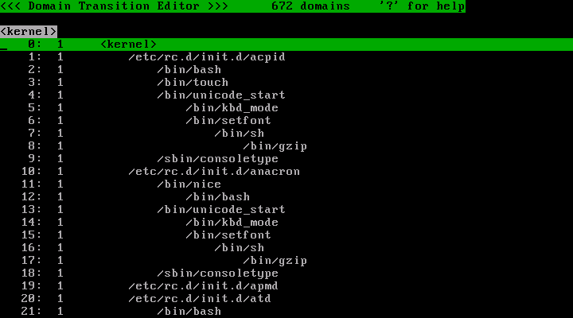
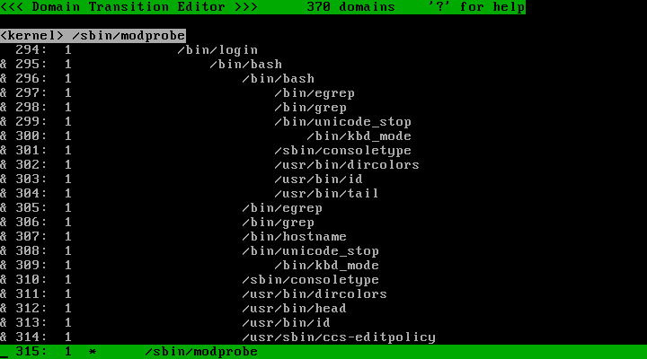
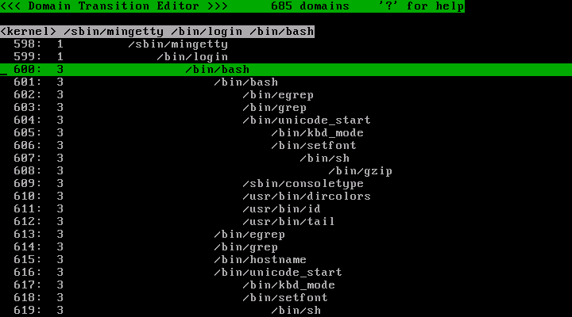
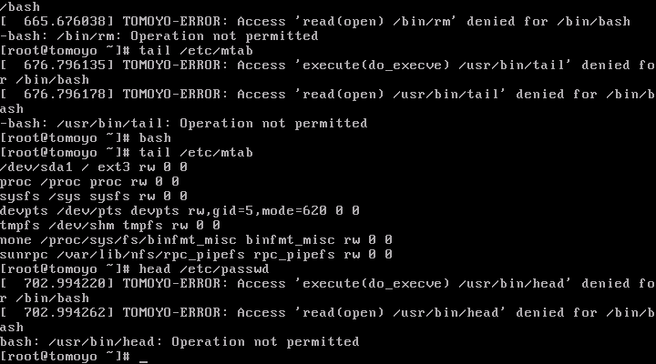

Last modified: $Date$
This page describes how to install and experience TOMOYO Linux.
Download source code from "linux-2.6 git tree" or "linux-2.6.30-rc1.tar.bz2" and extract it.
Next, create a kernel config with TOMOYO Linux enabled.
$ make -s menuconfig
Go to "Security options" screen and select "Enable different security models" and "TOMOYO Linux Support".
[ ] Enable access key retention support [*] Enable different security models -*- Enable the securityfs filesystem [ ] Socket and Networking Security Hooks -*- Security hooks for pathname based access control [ ] File POSIX Capabilities (0) Low address space to protect from user allocation [*] TOMOYO Linux Support
After creating a kernel config, compile the kernel.
$ make -s # make -s modules_install install
Create initrd if you need.
Edit /boot/grub/grub.conf or /boot/grub/menu.lst to add security=tomoyo to the kernel command line parameters.
Download source code from TOMOYO project at SourceForge.jp and and extract it and compile it.
$ wget http://osdn.dl.sourceforge.jp/tomoyo/30298/ccs-tools-1.6.7-20090401.tar.gz $ tar -zxf ccs-tools-1.6.7-20090401.tar.gz $ cd ccstools $ make # make install
Run tomoyo_init_policy.sh included in TOMOYO Linux tools to perform initial configuration.
# /usr/lib/ccs/tomoyo_init_policy.sh
You will get initial configuration files in /etc/tomoyo/ directory.
Before starting tutorial, configure TOMOYO Linux to learn whole system behavior.
# echo '<kernel>' > /etc/tomoyo/domain_policy.conf # echo 'use_profile 1' >> /etc/tomoyo/domain_policy.conf
Reboot and login to the system as root user, and run ccs-editpolicy included in TOMOYO Linux tools.
# /usr/sbin/ccs-editpolicy
ccs-editpolicy is a CUI tool to view and edit TOMOYO Linux's policy. The initial screen shows list of domains generated from the execution of /sbin/init till execution of /usr/sbin/ccs-editpolicy . All domains begin at <kernel> and new domain is created whenever execve() is called.
Each line shows an integer value between the line number and domain names. This integer value is called "profile number" and it represents profile currently assigned to a domain. A profile is a correction of TOMOYO Linux's access control level, and the contents of /etc/tomoyo/profile.conf is loaded into kernel via /sys/kernel/security/tomoyo/profile by /sbin/tomoyo-init .
The following 4 profiles were automatically generated by execution of tomoyo_init_policy.sh . A profile is assigned to domains.
Move the cursor to some domain you like and press 'Enter' key to see ACL given to the domain.
Browse the policy which is the results of learning boot sequence. You can easily know what process accesses what pathnames and/or resources.
Detailed usage of ccs-editpolicy is in How to use Policy Editor.
To quit ccs-editpolicy, press 'Q' key.
Now, the domain for login shell is already learning mode. Try the following commands.
# head /etc/passwd # bash # tail /etc/mtab # exit
You can operate as if the normal Linux, but the TOMOYO Linux kernel is monitoring accesses and generating policies and storing on the memory in the background.
Now, run ccs-editpolicy again. Change profile for the domains for login shell and its children/descendants from "learning mode" to "enforcing mode".

After you marked '&' to domains for login shell and its children/descendants, press 'S' '3' 'Enter' key to change profile for these domains from 1 to 3.

After changing the profile for domain for login shell to 3, press 'Q' key to quit ccs-editpolicy and run some commands.
# head /etc/passwd # OK # head /etc/shadow # NG # rm -fr / # NG # tail /etc/mtab # NG # bash # OK # tail /etc/mtab # OK # head /etc/passwd # NG

You can only run the operations you have just executed in learning mode. You ran "tail /etc/mtab" while in "learning mode", but you can't run it at the first stage of shell and you can run it at the second stage of shell. This is because these shells (first stage and second stage) have different "process invocation history" (i.e. these shells are in different domains) and permissions accumulated into these domains differ.
After you tried a series of operations, change profiles for domains for login shell to 1 using ccs-editpolicy, and proceed to the next tutorial.
Next, let us learn and tune Apache policy. If Apache is not installed on your system, please install it.
Execute ccs-editpolicy (see the first step) and assign profile number 1 to an Apache domain.
Restart Apache and see the Apache domain. You can see the access permissions needed in Apache start sequence like follows:
allow_read /etc/httpd/conf/httpd.conf allow_create /var/run/httpd.pid allow_unlink /var/run/httpd.pid
These permissions allow Apache to open configuration files for reading. Moreover, request some web contents using web browser.
When you reload Apache policy, you can see the new permissions:
allow_read /var/www/html/index.html
Some patterns for pathname is supported (See Policy Specifications of TOMOYO Linux) .
Using pattern and range, Apache policy can be written like follows:
allow_read /var/www/\* allow_read /var/www/\*/\* allow_read /var/www/\*/\*/\* allow_read /var/www/\*/\*/\*/\* allow_read /var/www/\*/\*/\*/\*/\*
'\*' means "more than or equals to 0 character other than '/'". To append an entry using ccs-editpolicy, press 'A' key and input content and press 'Enter' key.